<!doctype html>
<html lang="en">
<head>
  <meta charset="utf-8">
  <meta name="viewport" content="width=device-width, initial-scale=1">
  <title>arxiv digest — 2026-10-06</title>
  <style>
:root {
  --bg: #ffffff;
  --fg: #1f2328;
  --muted: #59636e;
  --border: #d0d7de;
  --card: #f6f8fa;
  --link: #0969da;
}
body {
  max-width: 980px;
  margin: 0 auto;
  padding: 2rem 1rem 5rem;
  font-family: -apple-system, BlinkMacSystemFont, "Segoe UI", Helvetica, Arial, sans-serif;
  line-height: 1.55;
  color: var(--fg);
  background: var(--bg);
}
a { color: var(--link); }
img { max-width: 100%; height: auto; }
pre, code { background: var(--card); border-radius: 6px; }
pre { padding: 1rem; overflow-x: auto; }
blockquote { border-left: 4px solid var(--border); padding-left: 1rem; color: var(--muted); }
details { margin: 0.6rem 0; }
summary { cursor: pointer; font-weight: 600; }
.paper-figures-scroll {
  display: flex;
  gap: 1rem;
  overflow-x: auto;
  overscroll-behavior-x: contain;
  padding: 0.75rem 0.25rem 1rem;
  margin: 1rem 0 1.25rem;
  border-top: 1px solid var(--border);
  border-bottom: 1px solid var(--border);
  scroll-snap-type: x proximity;
}
.paper-figure-card {
  flex: 0 0 min(260px, 72vw);
  scroll-snap-align: start;
  background: var(--card);
  border: 1px solid var(--border);
  border-radius: 12px;
  padding: 0.55rem;
}
.paper-figure-card img {
  display: block;
  width: 100%;
  max-height: 240px;
  object-fit: contain;
  background: white;
  border-radius: 8px;
}
.paper-figure-caption {
  display: block;
  margin-top: 0.5rem;
  color: var(--muted);
  font-size: 0.85rem;
}
.figure-strip-hint {
  color: var(--muted);
  font-size: 0.9rem;
  margin-bottom: -0.3rem;
}
</style>
  <!-- MathJax: renders $...$ inline math and $$...$$ display math, plus
       \(...\) and \[...\]. Loaded from the official CDN; works offline
       once cached. Configured to skip code/pre blocks so arxiv IDs that
       look like dollar amounts don't get mangled. -->
  <script>
    window.MathJax = {
      tex: {
        inlineMath: [['$', '$'], ['\\(', '\\)']],
        displayMath: [['$$', '$$'], ['\\[', '\\]']],
        processEscapes: true,
        processEnvironments: true
      },
      options: {
        skipHtmlTags: ['script', 'noscript', 'style', 'textarea', 'pre', 'code'],
        ignoreHtmlClass: 'tex2jax_ignore',
        processHtmlClass: 'tex2jax_process'
      }
    };
  </script>
  <script id="MathJax-script" async
    src="https://cdn.jsdelivr.net/npm/mathjax@3/es5/tex-chtml.js"></script>
</head>
<body>
<header style="background-color: #333; color: white; padding: 15px; margin-bottom: 20px;">
  <h1 style="margin: 0; font-size: 24px;">
    <a href="https://ochelpan.github.io/arXiv_clean/" style="color: white; text-decoration: none;">Main</a>
  </h1>
</header>

<h1>Daily arXiv Report</h1>

<hr>
<p>
<a href="index.html">← Index</a>
 · <a href="papers_08.html">← Previous</a>
</p>
<hr>

<h2>Papers 161–170</h2>
<p><a id="paper-2610.02541"></a></p>
<h3 id="persistence-of-kinks-in-the-nls-equation-with-competing-nonlinearities"><a href="http://arxiv.org/abs/2610.02541v1">Persistence of kinks in the NLS equation with competing nonlinearities</a></h3>
<p><strong>Authors:</strong> P. G. Kevrekidis, D. E. Pelinovsky<br>
<strong>Type:</strong> theory · <strong>Category:</strong> other · <strong>PDF:</strong> <a href="https://arxiv.org/pdf/2610.02541v1">https://arxiv.org/pdf/2610.02541v1</a><br>
<strong>Analysis basis:</strong> full PDF text, analyzed in chunks
<strong>Topic relevance:</strong> <code>Frenkel-Kontorova</code> <strong>3/5</strong> · <code>Keldysh / 2PI / non-Gaussian methods</code> <strong>1/5</strong> · <code>analog quantum simulation</code> <strong>1/5</strong> · <code>driven-dissipative phase transition</code> <strong>1/5</strong> · <code>methods for driven-dissipative</code> <strong>1/5</strong> · <code>non-equilibrium universality</code> <strong>1/5</strong></p>
<div class="figure-strip-hint">↔ Scroll figures horizontally</div>
<div class="paper-figures-scroll">
<figure class="paper-figure-card">
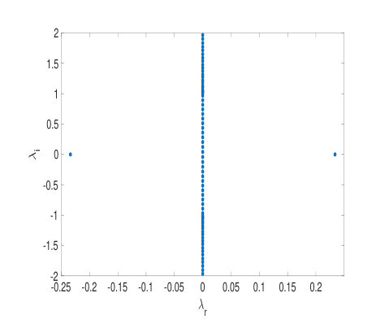
<figcaption class="paper-figure-caption"><b>Fig 1.</b> Figure 1. Numerical results for the potential V (x) = xe−x2. Left: the per- turbed kink profile φ (thick solid line), the potential V (red dashed line), and the unperturbed kink φ0 for comparison. Right: the complex plane (λr, λi) of eigenvalues λ = λr + iλi of the spectral stability problem (23).</figcaption>
</figure>
<figure class="paper-figure-card">
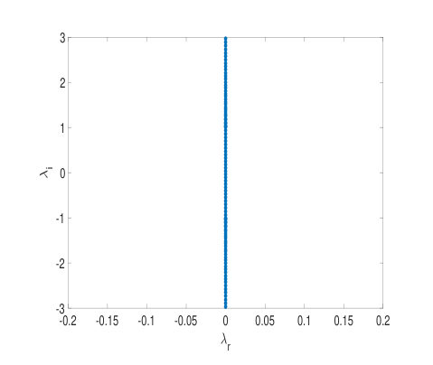
<figcaption class="paper-figure-caption"><b>Fig 2.</b> Figure 2. The same as Figure 1 but for the potential V (x) = −xe−x2.</figcaption>
</figure>
<figure class="paper-figure-card">
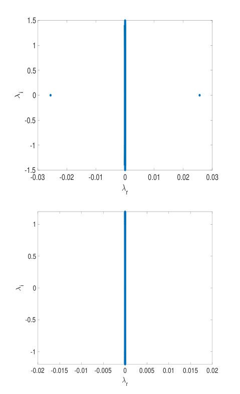
<figcaption class="paper-figure-caption"><b>Fig 3.</b> Figure 3. The same as Figure 1 but for the potential V (x) = (1−x2)sech2(x) with ε = 0.1. Top row: the negative root of Veff. Bottom row: the positive root of Veff.</figcaption>
</figure>
<figure class="paper-figure-card">
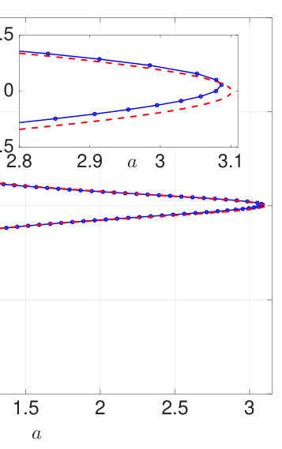
<figcaption class="paper-figure-caption"><b>Fig 4.</b> Figure 4. Bifurcation diagram for the potential V (x) = (1 −ax2)sech2(x) for ε = 0.1, showing the numerically computed kink-center location s from pseudo-arclength continuation together with the roots of Veffgiven by (43). The diagram captures the positive and negative branches and their merger near the fold bifurcation at acrit given by (44).</figcaption>
</figure>
<figure class="paper-figure-card">
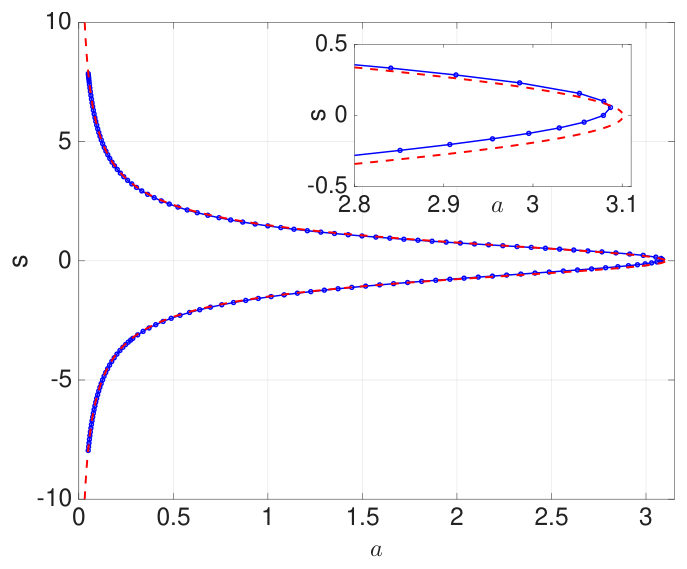
<figcaption class="paper-figure-caption"><b>Fig 5.</b> Figure 5 compares the numerically computed eigenvalues µ+(ε) of L+(ε) (left) and λ(ε) of the spectral stability problem (23) (right) with the leading-order asymptotic approximations (41) and (42) for the same value of ε = 0.1 and varying values of a. The eigenvalue µ+(ε) is negative for the negative root s0 of Veffand positive for the positive root s0. The agreement is very good and consistent with the approximation in Figure 5. The discrepancy between the two curves is visible for a &gt; 1.5 since the value of ε is fixed. The eigenvalue µ+(ε) vanishes as a →acrit due to the fold bifurcation. The eigenvalue λ(ε) is positive only for the negative root s0 of Veff. To obtain an accurate numerical...</figcaption>
</figure>
</div>

<p><strong>Summary.</strong> This work analyzes the persistence and stability of kink solutions in a cubic-quintic NLS equation subjected to an external potential. Using advanced mathematical techniques like Lyapunov–Schmidt reduction, the authors establish criteria based on an effective potential to predict if a kink will be stable or unstable. The results confirm that the pinning mechanism is robust and provides detailed insights into the spectral properties of the perturbed system.</p>
<p><strong>Why it may be interesting.</strong> The study of nonlinear wave dynamics, particularly the stability and pinning of topological defects like kinks, is highly relevant to nonlinear optics, Bose-Einstein condensates (BECs), and nonlinear wave propagation in various physical systems.</p>
<details>
<summary>Detailed structure</summary>
<p><strong>Main problem.</strong> The paper investigates how kinks (solitary wave solutions) in the Nonlinear Schrödinger (NLS) equation persist when translational invariance is broken by an external potential.</p>
<p><strong>Main result.</strong> The persistence of kinks is governed by the roots of an effective potential, and the stability of the pinned state is determined by the sign of the derivative of this effective potential at the root.</p>
<p><strong>Method.</strong> The analysis employs the Lyapunov–Schmidt reduction method, perturbation theory to analyze eigenvalue splitting, and comparison with numerical continuation and direct dynamical simulations.</p>
<p><strong>Model / system.</strong> The model is the NLS equation with competing focusing cubic and defocusing quintic nonlinearities, perturbed by an external potential V(x). Stationary solutions are sought in the form of kinks.</p>
<p><strong>Key observables.</strong> Effective potential V_eff(s), the sign of V'<em>eff(s_0), and the eigenvalues mu</em>+ and lambda characterizing the stability.</p>
<p><strong>Important parameters / regimes.</strong> The small perturbation parameter epsilon (ε) controlling the strength of the external potential V(x).</p>
<p><strong>Assumptions / limitations.</strong> The analysis relies on the validity of the Lyapunov–Schmidt reduction and asymptotic expansions for the eigenvalues, though some long-term stability aspects remain open.</p>
<p><strong>Figures summary.</strong> Figure 6 illustrates the dynamical evolution of an unstable kink, showing it emitting radiation and subsequently settling near a stable pinned state.</p>
<p><strong>Paper structure.</strong> The paper follows a structure moving from the analytical derivation of the pinning mechanism via V_eff, to the spectral stability analysis determining unstable eigenvalues, and concluding with numerical corroboration of these analytical predictions.</p>
</details>
<details>
<summary>Abstract</summary>
<p>External potentials break the translational invariance of nonlinear Schrödinger (NLS) equations and generally convert a continuous family of standing wave solutions into isolated pinned states. We study this mechanism for the prototypical case of a kink in the NLS equation with competing focusing cubic and defocusing quintic nonlinearities. The Lyapunov--Schmidt reduction method is used to prove that the location $s_0$ of the pinned kinks is selected near roots of an effective potential $V_{\rm eff}(s)$. We then determine how the translational zero eigenvalue of the Jacobian operator splits under the perturbation and prove that the sign of $V_{\rm eff}'(s_0)$ distinguishes eigendirections of positive and negative energy. We further show that if the Jacobian operator admits a negative eigenvalue, then the stability problem contains a real unstable eigenvalue. The derivation of the asymptotic expansion for the unstable eigenvalue is nonstandard because the zero eigenvalue is embedded in the continuous spectrum of the linearized operator. Finally, we show that the persistence of kinks lacks parity symmetry even if the external potential is odd. Numerical continuation, spectral computations with domains adapted to the slowly decaying eigenfunctions, and direct dynamical simulations of the time evolution corroborate the analytical predictions for different representative examples.</p>
</details>
<p><sub><a href="#top">↑ back to top</a></sub></p>

<p><a id="paper-2610.02441"></a></p>
<h3 id="bacterial-aggregation-in-the-presence-of-directed-motion"><a href="http://arxiv.org/abs/2610.02441v1">Bacterial aggregation in the presence of directed motion</a></h3>
<p><strong>Authors:</strong> Timothy Power, Hildur Knutsdottir, Leah Edelstein-Keshet, Theodore Kolokolnikov<br>
<strong>Type:</strong> theory · <strong>Category:</strong> statistical mechanics · <strong>PDF:</strong> <a href="https://arxiv.org/pdf/2610.02441v1">https://arxiv.org/pdf/2610.02441v1</a><br>
<strong>Analysis basis:</strong> full PDF text, analyzed in chunks
<strong>Topic relevance:</strong> <code>non-equilibrium universality</code> <strong>3/5</strong> · <code>Frenkel-Kontorova</code> <strong>1/5</strong> · <code>Keldysh / 2PI / non-Gaussian methods</code> <strong>1/5</strong> · <code>driven-dissipative phase transition</code> <strong>1/5</strong> · <code>methods for driven-dissipative</code> <strong>1/5</strong></p>
<div class="figure-strip-hint">↔ Scroll figures horizontally</div>
<div class="paper-figures-scroll">
<figure class="paper-figure-card">
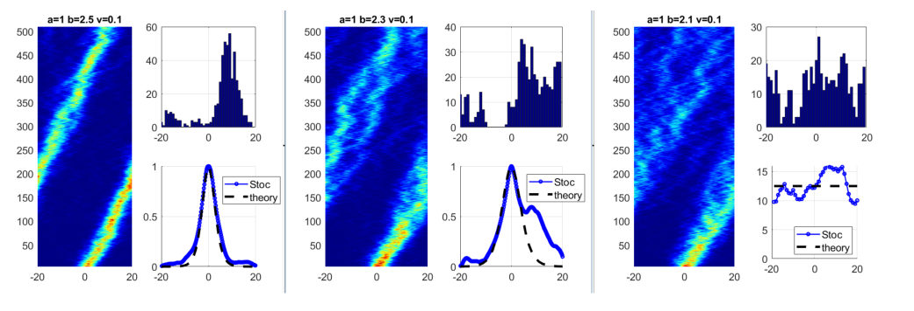
<figcaption class="paper-figure-caption"><b>Fig 1.</b> FIG. 1. Three distinct simulations of the stochastic ABM version of Model I on a periodic domain with n = 1000 particles. and for parameters as given. For each of three panels, left is a time-space plot (kymograph) of the particle density. Top right is a histogram of particle locations at t = 500. Bottom right shows the average profile of the moving cluster (histogram averaged over t = 300 . . . 500), normalized to center the distribution at x = 0. Overlaid is the theoretical prediction given in (2.17). In all simulations we took d = 1. For the third simulation, the aggregation parameter b is exactly at the threshold bc = 2a + v and the cluster dissipates.</figcaption>
</figure>
<figure class="paper-figure-card">
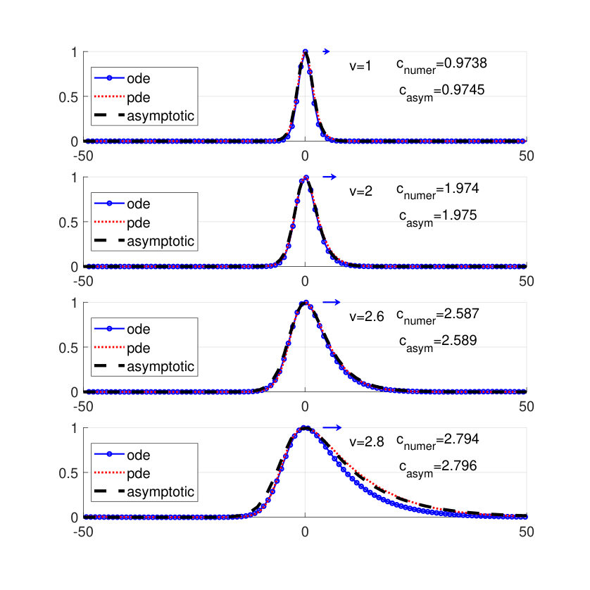
<figcaption class="paper-figure-caption"><b>Fig 2.</b> FIG. 3. Model I: Comparison between the discrete ODE model (2.1), the PDE approximation (2.8) and the asymptotic solution (2.17). For the ODE model the parameters were taken to be: a = 1, b = 5, N = 100 bins on the domain of size L = 100 so that h = 1, and v as indicated; For the PDE model, we used implicit-explicit Euler scheme (implicit on diffusion and biharmonic terms, explicit on all other terms) with n = 150 meshpoints on the domain of size [0, 100]. All profiles are recentered on the pulse maximum, and the height is normalized to unity (since the equations are invariant under scaling of u, scaling it does not change the speed or profile). Periodic boundary conditions were used for...</figcaption>
</figure>
<figure class="paper-figure-card">
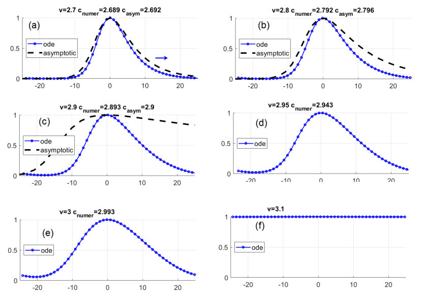
<figcaption class="paper-figure-caption"><b>Fig 3.</b> FIG. 4. Model I: Transition from a localized cluster (when v &lt; v∗) to a more broad non-homogeneous state when v∗&lt; v &lt; vc and finally to a homogeneous constant state for v &gt; vc. Here, a = h = d = 1, b = 5 and v is as indicated. All profiles have been rescaled to have a height of unity, and shifted to have the peak at the origin. Blue line (“ode”) is the numerical solution to (2.1), at time t = 10000. Black dashed line is the asymptotic solution (2.17), where relevant. For these parameter values, v∗= 2.9099 (given by (2.22)) and vc = 3. In (a)-(c), v &lt; v∗and the localized cluster of the form (2.17) exists, although the approximation breaks down as v →v− ∗. In (d)-(e), the localized state...</figcaption>
</figure>
<figure class="paper-figure-card">
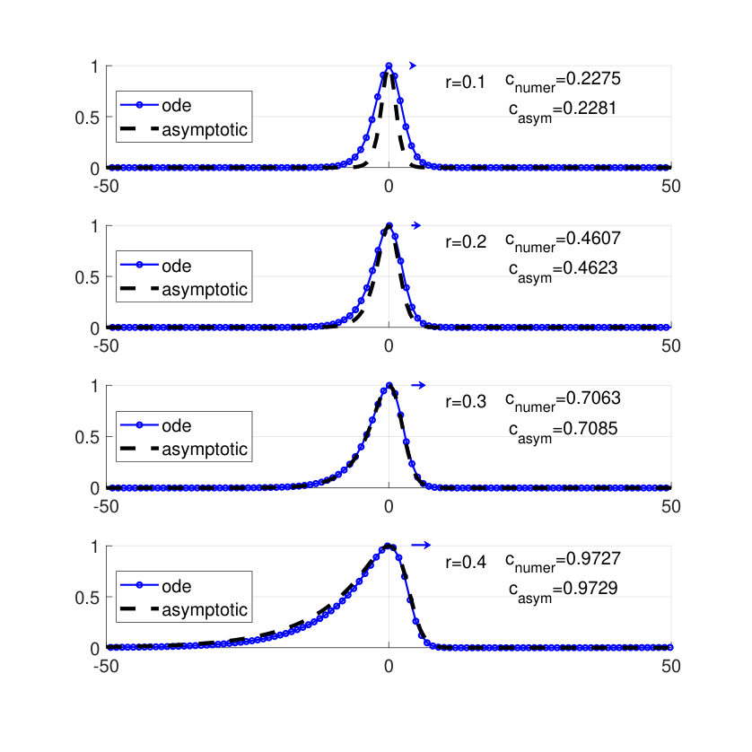
<figcaption class="paper-figure-caption"><b>Fig 4.</b> FIG. 5. Model II: Comparison between the discrete ODE model (3.23) and the asymptotic solution (3.29-3.31, 2.16, 2.17). For the ODE model, the parameters were taken to be: a = 1, b = 2.5, N = 100, L = 100, h = 1, with periodic boundary conditions and r as indicated. For each frame, cnumer is the speed of the pulse propagation, computed from the direct numerical simulations by tracking pulse location, whereas casym is the asymptotic prediction as given by the formula (3.31). The last frame (r = 0.4) corresponds to a bistable region (see also Figure 6).</figcaption>
</figure>
<figure class="paper-figure-card">
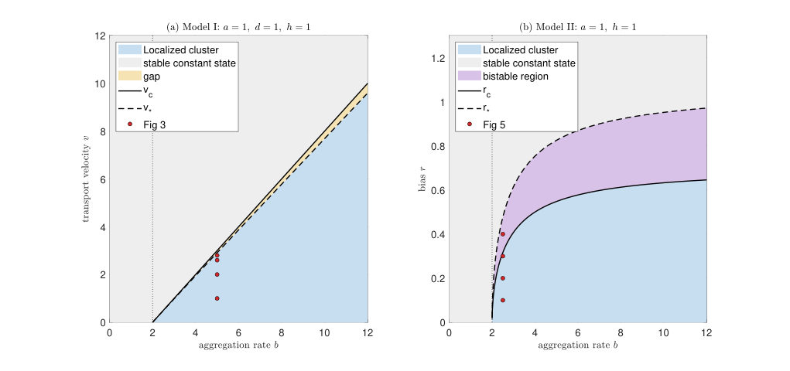
<figcaption class="paper-figure-caption"><b>Fig 5.</b> FIG. 6. (a) Bifurcation diagram for Model I, in the (b, v) plane, with a = h = d = 1. Constant steady state is stabe in the grey region v &gt; vc. Localized solutions exist in the blue region v &lt; v∗. Since v∗&lt; vc, there is a “gap” region where the constant state is unstable but fully localized clusters do not exist (see also Figure 4). Red dots denote the simulation parameters from Figure 3. (b) Bifurcation diagram for Model II, in the (b, r) plane with a = h = d = 1. Constant steady state is stable in the grey region r &gt; rc. Localized solutions exist in the blue region r &lt; r∗. Since r∗&gt; rc, there is a bistable region where constant stable state coexists with a localized cluster state. Red...</figcaption>
</figure>
</div>

<p><strong>Summary.</strong> This work develops a continuum PDE model to describe how bacterial clusters form and move under directed forces like chemotaxis. By generalizing previous models, the authors provide analytical solutions for the cluster's speed and map out stability regimes, showing excellent agreement between discrete simulations and the derived PDE theory.</p>
<p><strong>Why it may be interesting.</strong> While focused on biology, the mathematical framework—deriving complex nonlinear PDEs from discrete stochastic processes and analyzing traveling wave solutions—is highly relevant to non-equilibrium statistical mechanics and pattern formation in complex systems.</p>
<details>
<summary>Detailed structure</summary>
<p><strong>Main problem.</strong> The paper models the aggregation of bacteria into clusters when subjected to directed motion, such as chemotaxis or fluid transport.</p>
<p><strong>Main result.</strong> The authors derived a fourth-order nonlinear PDE that accurately describes the cluster density profile and group velocity, identifying distinct regimes for cluster existence and speed.</p>
<p><strong>Method.</strong> The continuum limit was derived from stochastic Agent-Based Models (ABMs) using Taylor expansion, leading to a generalized nonlinear PDE solved via a traveling pulse ansatz.</p>
<p><strong>Model / system.</strong> The system models bacterial aggregation using two variants: Model I (intrinsic directed motion $v$) and Model II (implicit directional bias $r$). The dynamics are captured by a fourth-order PDE.</p>
<p><strong>Key observables.</strong> Cluster density profile, group velocity (speed of the travelling cluster), and stability regimes (e.g., bistability or 'gap' regions).</p>
<p><strong>Important parameters / regimes.</strong> Directed motion parameters ($v$ or $r$), aggregation strength ($b$), and diffusion coefficients ($\alpha, eta, \gamma$ in the PDE).</p>
<p><strong>Assumptions / limitations.</strong> The derivation relies on the assumption of a small bin spacing ($h 	o 0$) for the PDE limit, and the analysis uses traveling wave ansatz solutions.</p>
<p><strong>Figures summary.</strong> Figures illustrate the transition of the cluster state as velocity increases (localized $  o$ homogeneous) and show bifurcation diagrams revealing 'gap' and bistability windows for the two models.</p>
<p><strong>Paper structure.</strong> The paper progresses by establishing the ABM foundation, deriving the continuum PDE limit, and then analyzing the resulting PDE using traveling wave solutions to determine the cluster speed and stability boundaries for both motion models.</p>
</details>
<details>
<summary>Abstract</summary>
<p>We model directed motion of cells that aggregate into a cluster in the presence of chemotaxis or fluid transport. Starting from a stochastic agent-based model (ABM) of Galante \&amp; Levy (2013), Chavy-Waddy \&amp; Kolokolnikov (2016), we consider two model variants, with (I) directed motion of individuals, or (II) implicit individual bias in one direction. In both cases, we derive fourth order nonlinear PDEs representing the continuum limits of the models as a generalization of Chavy-Waddy \&amp; Kolokolnikov (2016). An exact analytic solution then describes cluster density profile as well as the group velocity, and we identify the regimes where the travelling cluster exists. Excellent agreement is observed between the discrete models and the exact solutions of the PDEs in both models, including the existence and speed of the travelling cluster.</p>
</details>
<p><sub><a href="#top">↑ back to top</a></sub></p>

<p><a id="paper-2610.03532"></a></p>
<h3 id="electrostatic-doping-of-moire-superlattices-controls-the-optical-fingerprint-of-a-wse_2-twisted-bilayer-graphene-heterostructure"><a href="http://arxiv.org/abs/2610.03532v1">Electrostatic Doping of Moiré Superlattices Controls the Optical Fingerprint of a WSe_2 /Twisted Bilayer Graphene heterostructure</a></h3>
<p><strong>Authors:</strong> Houssem Eddine Hannachi, Sihem Jaziri<br>
<strong>Type:</strong> theory · <strong>Category:</strong> strongly correlated electrons · <strong>PDF:</strong> <a href="https://arxiv.org/pdf/2610.03532v1">https://arxiv.org/pdf/2610.03532v1</a><br>
<strong>Analysis basis:</strong> full PDF text, analyzed in chunks
<strong>Topic relevance:</strong> <code>analog quantum simulation</code> <strong>3/5</strong> · <code>Keldysh / 2PI / non-Gaussian methods</code> <strong>1/5</strong> · <code>interference shaping light</code> <strong>1/5</strong></p>
<div class="figure-strip-hint">↔ Scroll figures horizontally</div>
<div class="paper-figures-scroll">
<figure class="paper-figure-card">
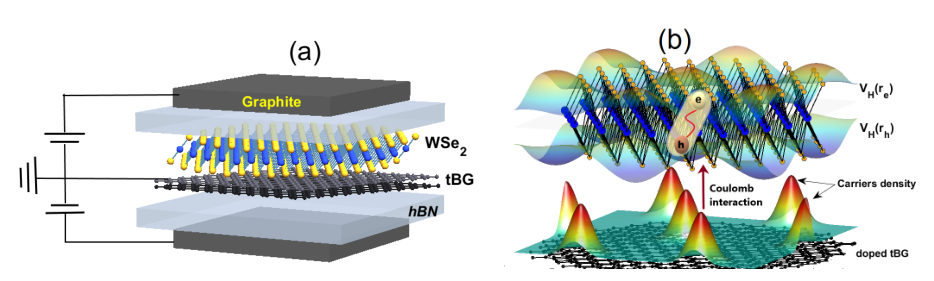
<figcaption class="paper-figure-caption"><b>Fig 1.</b> FIG. 1. (a) Schematic illustration of the studied hBN/WSe2/tBG/hBN heterostructure. The WSe2 monolayer is positioned adjacent to twisted bilayer graphene, which is electrostatically doped to control the carrier density in the moir´e superlattice. (b) Cartoon illustrative of the mechanism by which the carrier density in the doped moir´e tBG generates a spatially periodic electrostatic potential in the WSe2 monolayer. This potential acts on the electron and hole constituents of the exciton through the respective potentials VH(re) and VH(rh).</figcaption>
</figure>
<figure class="paper-figure-card">
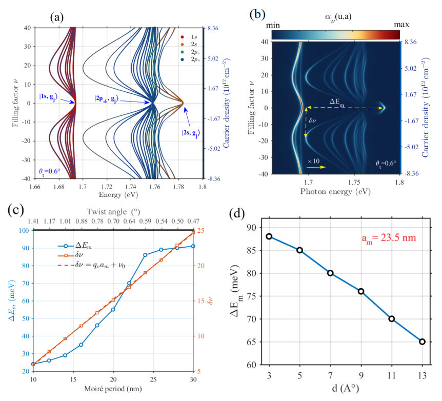
<figcaption class="paper-figure-caption"><b>Fig 2.</b> FIG. 2. (a) Filling factor dependence of the bright moir´e-exciton states in the WSe2/tBG heterostructure at a twist angle of θt = 0.6◦(am = 23.5 nm), showing the states |1s, gj⟩, |2p±, gj⟩, and |2s, gj⟩, with the corresponding projected Rydberg-state weights indicated by the marker size and color. (b) Corresponding absorption map as a function of filling factor (carrier- density). Here, the carrier-density axis is calculated as ν ×ρm. The dashed yellow vertical and horizontal double arrow indicate the characteristic filling factor νm and energy scale ∆Em, respectively. (c) Dependence of the quantities ∆Em and δν on the moir´e period (twist angle). (d) Dependence of ∆Em on the interlayer...</figcaption>
</figure>
<figure class="paper-figure-card">
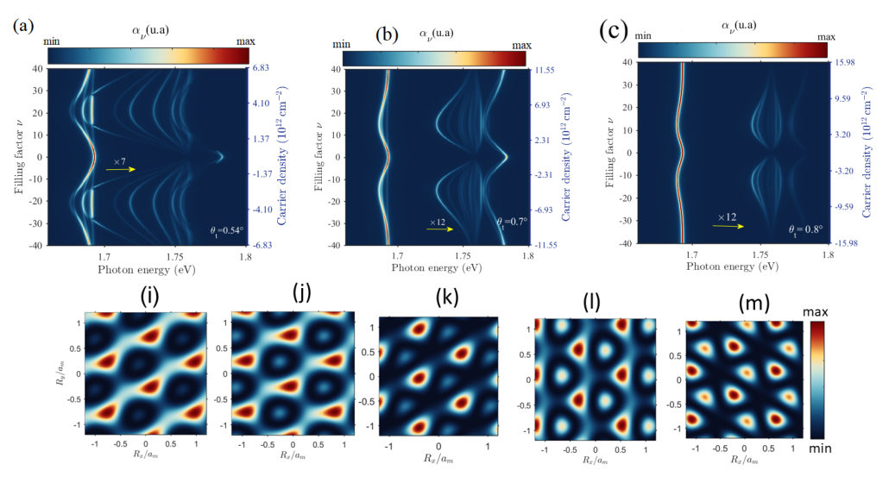
<figcaption class="paper-figure-caption"><b>Fig 3.</b> FIG. 3. (a–c) Filling-factor dependence of the absorption maps for twist angles of θt = 0.54◦, 0.7◦, and 0.8◦, respectively. (i–m) Corresponding real-space COM density distributions R Ψ(r = 0, R)d2R 2 Q=0, for the 8th–12th bright states at a fixed twist angle of θt = 0.45◦and filling factor ν = 10.</figcaption>
</figure>
</div>

<p><strong>Summary.</strong> This theoretical study analyzes how doping the moiré superlattice of twisted bilayer graphene (tBG) modifies the optical fingerprint of a coupled WSe2 monolayer. The research shows that doping generates a periodic potential that strongly influences the exciton's energy levels, leading to observable satellite resonances. This establishes the doped tBG as a powerful tool for optically engineering excitonic states in adjacent 2D semiconductors.</p>
<p><strong>Why it may be interesting.</strong> The work directly addresses how external tuning (electrostatic doping) can engineer the optical properties of strongly correlated excitonic states in a moiré heterostructure, which is a key area in correlated materials physics.</p>
<details>
<summary>Detailed structure</summary>
<p><strong>Main problem.</strong> The study investigates how electrostatic doping within the moiré superlattice of twisted bilayer graphene (tBG) controls the optical absorption spectrum of a coupled WSe2 monolayer.</p>
<p><strong>Main result.</strong> Electrostatic doping induces pronounced modifications in the excitonic absorption spectrum, notably causing the emergence of multiple satellite resonances due to the interplay between exciton degrees of freedom and doping-induced hybridization.</p>
<p><strong>Method.</strong> The authors employed a detailed theoretical model solving the exciton Hamiltonian, incorporating the spatially modulated electrostatic potential derived from the doped moiré superlattice.</p>
<p><strong>Model / system.</strong> The system is a WSe2 monolayer stacked on tBG, forming a moiré superlattice. The exciton is governed by a Hamiltonian that includes terms for kinetic energy, Coulomb interaction, and the periodic potential induced by the doped tBG.</p>
<p><strong>Key observables.</strong> Excitonic absorption spectrum, multiple satellite resonances, energy shift ($\Delta E_m$), and characteristic filling factor ($\delta
u$).</p>
<p><strong>Important parameters / regimes.</strong> Twist angles below the magic angle ($   heta_t &lt; 1.1^\circ$), moiré filling factor ($
u$), and carrier density ($\approx 4  imes 10^{12}    ext{ cm}^{-2}$).</p>
<p><strong>Assumptions / limitations.</strong> The model uses the screened Coulomb interaction and treats the moiré potential as an effective mean-field periodic potential, neglecting fine-structure effects like Berry curvature contributions.</p>
<p><strong>Figures summary.</strong> Figures illustrate the schematic of the heterostructure, the mechanism of potential generation via doping, and the resulting spectral features and energy shifts as a function of doping/filling factor.</p>
<p><strong>Paper structure.</strong> The paper establishes the physical system and the Hamiltonian, details the theoretical methodology for calculating the exciton response to the moiré potential, presents the key results regarding spectral modifications, and concludes by establishing the tunability of excitonic states.</p>
</details>
<details>
<summary>Abstract</summary>
<p>We theoretically investigate the optical response of the WSe2 monolayer vertically stacked on twisted bilayer graphene (tBG) under electrostatic doping. In this heterostructure, the doped moiré superlattice of tBG generates a spatially modulated electrostatic potential that couples to the electron and hole constituents of the WSe2 exciton through the screened Coulomb interaction, thereby providing a microscopic mechanism for exciton coupling to the charge-density landscape of the moiré Fermi sea. Focusing on twist angles below the magic angle (1.1°), where electronic correlations are strongly enhanced, we demonstrate that electrostatic doping induces pronounced modifications of the excitonic absorption spectrum, including the emergence of multiple satellite resonances. We show that these spectral features originate from the interplay between the exciton center-of-mass and internal degrees of freedom, together with doping-induced hybridization between Rydberg exciton states of different orbital symmetry. The calculated spectra are in good agreement with previously reported experimental observations and theoretical predictions. Our results establish electrostatic doping in tBG as an effective means of engineering excitonic states in adjacent semiconducting monolayers and provide a pathway toward novel optical sensor devices.</p>
</details>
<p><sub><a href="#top">↑ back to top</a></sub></p>

<p><a id="paper-2610.03094"></a></p>
<h3 id="quantum-critical-superconductivity-in-a-dense-fermi-dilute-bose-mixture-close-to-mechanical-instability"><a href="http://arxiv.org/abs/2610.03094v1">Quantum critical superconductivity in a dense fermi dilute bose mixture close to mechanical instability</a></h3>
<p><strong>Authors:</strong> Vibhu Mishra<br>
<strong>Type:</strong> theory · <strong>Category:</strong> other · <strong>PDF:</strong> <a href="https://arxiv.org/pdf/2610.03094v1">https://arxiv.org/pdf/2610.03094v1</a><br>
<strong>Analysis basis:</strong> full PDF text, analyzed in chunks
<strong>Topic relevance:</strong> <code>Keldysh / 2PI / non-Gaussian methods</code> <strong>3/5</strong> · <code>analog quantum simulation</code> <strong>1/5</strong> · <code>methods for driven-dissipative</code> <strong>1/5</strong></p>
<div class="figure-strip-hint">↔ Scroll figures horizontally</div>
<div class="paper-figures-scroll">
<figure class="paper-figure-card">
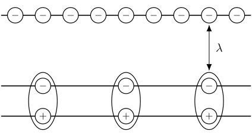
<figcaption class="paper-figure-caption"><b>Fig 1.</b> FIG. 1. The model system of dense electrons in top layer in- teracting with dilute excitons below that motivate the field theory under study. Both λ and u are repulsive due to the orientation of the excitonic dipole. The fermion boson in- teraction is repulsive as opposed to the cases looked at in [5, 6] which circumvents electron-exciton bound states. The drawback of this specific physical setup for our purposes is discussed in Sec.[VII].</figcaption>
</figure>
</div>

<p><strong>Summary.</strong> This theoretical work explores enhancing superconductivity in a Fermi-Bose mixture by coupling electrons to a dilute Bose gas. By analyzing density fluctuations using RPA, the authors demonstrate that the resulting attraction can lead to an algebraic enhancement of $T_c$ rather than the typical exponential BCS dependence. This suggests a powerful mechanism for designing novel superconducting materials.</p>
<p><strong>Why it may be interesting.</strong> It provides a concrete theoretical pathway to engineer high-$T_c$ superconductors by leveraging quantum critical fluctuations from bosonic baths, which is highly relevant to modern condensed matter research.</p>
<details>
<summary>Detailed structure</summary>
<p><strong>Main problem.</strong> The paper investigates mechanisms to enhance superconducting transition temperatures ($T_c$) by coupling fermions (electrons) to a bosonic gas (e.g., excitons or dilute bosons).</p>
<p><strong>Main result.</strong> The coupling can lead to an effective attraction that results in an algebraic dependence for $T_c$ ($T_c \propto g$), significantly surpassing the exponential dependence found in standard BCS theory.</p>
<p><strong>Method.</strong> The analysis employs the Random Phase Approximation (RPA) and utilizes renormalization group (RG) techniques to analyze the flow of pairing channels and calculate the fermion self-energy.</p>
<p><strong>Model / system.</strong> The model is a two-dimensional system consisting of a metal (fermions) coupled to an uncondensed Bose gas with repulsive Bose-Fermi interactions. The analysis covers both deeply degenerate and non-degenerate temperature regimes.</p>
<p><strong>Key observables.</strong> Superconducting transition temperature ($T_c$), fermion self-energy ($\Sigma(i\omega)$), and the effective pairing strength ($g$).</p>
<p><strong>Important parameters / regimes.</strong> Boson density (acts as a bottleneck), interaction coupling constant ($\lambda$), and the ratio of energy scales ($\Lambda$ vs $\Lambda'$).</p>
<p><strong>Assumptions / limitations.</strong> The use of RPA, the validity of the T-matrix approximation for the boson self-energy, and the assumption that long-range density fluctuations drive the pairing enhancement.</p>
<p><strong>Figures summary.</strong> Figure 1 illustrates the model system: dense electrons interacting with dilute excitons.</p>
<p><strong>Paper structure.</strong> The paper builds from establishing the general model Hamiltonian and the standard BCS comparison, moves through detailed calculations of the boson polarization function ($\Pi_b$) in different temperature regimes, and culminates in deriving the enhanced $T_c$ via the self-energy calculation.</p>
</details>
<details>
<summary>Abstract</summary>
<p>We couple a metal to an uncondensed bose gas with repulsive bose-fermi interactions in two dimensions. Within the random phase approximation, we show that the density fluctuations of the bosons, which mediate the effective fermion-fermion attraction, become long ranged on appropriate tuning of interactions. This leads to parametrically enhanced superconducting temperatures $T_c \propto g$ as opposed to $T_c \propto \exp(-1/g)$ for the BCS case. The dilute bose gas density acts as the primary bottleneck to the enhancement. We discuss the conceptual difficulties of implementing this idea in electron-exciton mixtures.</p>
</details>
<p><sub><a href="#top">↑ back to top</a></sub></p>

<p><a id="paper-2610.02672"></a></p>
<h3 id="inferring-constitutive-forces-from-noisy-allen-cahn-movies-with-moment-equations"><a href="http://arxiv.org/abs/2610.02672v1">Inferring constitutive forces from noisy Allen-Cahn movies with moment equations</a></h3>
<p><strong>Authors:</strong> Soobeen Jung, Hyunju Kim<br>
<strong>Type:</strong> both · <strong>Category:</strong> statistical mechanics · <strong>PDF:</strong> <a href="https://arxiv.org/pdf/2610.02672v1">https://arxiv.org/pdf/2610.02672v1</a><br>
<strong>Analysis basis:</strong> full PDF text, analyzed in chunks
<strong>Topic relevance:</strong> <code>Keldysh / 2PI / non-Gaussian methods</code> <strong>2/5</strong> · <code>analog quantum simulation</code> <strong>2/5</strong> · <code>driven-dissipative phase transition</code> <strong>2/5</strong> · <code>methods for driven-dissipative</code> <strong>2/5</strong> · <code>non-equilibrium universality</code> <strong>2/5</strong> · <code>quantum measurements</code> <strong>2/5</strong> · <code>correlated / nonlocal dissipation</code> <strong>1/5</strong></p>
<div class="figure-strip-hint">↔ Scroll figures horizontally</div>
<div class="paper-figures-scroll">
<figure class="paper-figure-card">
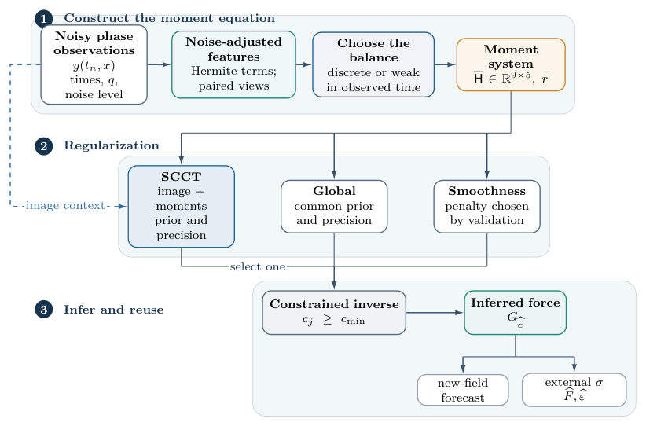
<figcaption class="paper-figure-caption"><b>Fig 1.</b> Figure 1: Method hierarchy. Hermite polynomials and paired views address distinct noise effects. The observation source determines the discrete or weak balance. Each regularizer uses the same moment system and positive constrained inverse; the dashed path supplies image context only to SCCT. External surface tension sets the energy scale after force inference and does not alter forecasts.</figcaption>
</figure>
<figure class="paper-figure-card">
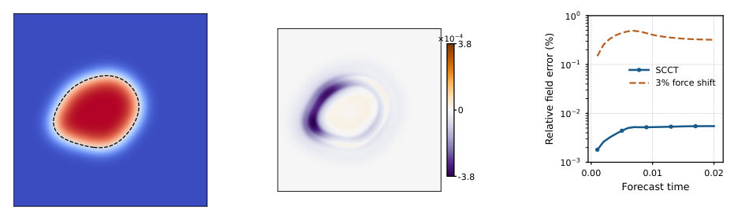
<figcaption class="paper-figure-caption"><b>Fig 2.</b> Figure 2: Transfer to an unseen topology-rich geometry. Blue and red in (a)–(d) denote the negative and positive phase. The dashed black line in (d) is the exact-law zero contour. All fields use the same exact initial condition on a 5122 grid and Fourier Crank–Nicolson/second-order Adams–Bashforth (CNAB2) solver [37]; only the force differs. The previously inferred SCCT force comes from the separate noisy wobble trajectory and has 100eG = 0.096% on the phase grid. Panel (f) compares 100eu(t) = 100∥umodel(t) −u⋆(t)∥2/∥u⋆(t)∥2 with the 3% force-rescaling control on a logarithmic error axis. The signed difference in (e) uses units of 10−4.</figcaption>
</figure>
<figure class="paper-figure-card">

<figcaption class="paper-figure-caption"><b>Fig 3.</b> Figure 3: Three-dimensional transfer and a force-sensitivity control. Panels (a)–(c) render the SCCT u = 0 isosurface at t = 0.004 for one law of each degree on a different geometry. The same three laws are reused on the seven-handle ring cage, not counted as additional independent laws: (d) and (f) compare the exact and SCCT isosurfaces at the same time, t = 0.008, for the degree-four law. Both have six positive components. Panel (e) compares the SCCT and global inverses with a 3% rescaling of the exact force on that same ring cage at t = 0.008; its horizontal error axis is logarithmic. Each comparison starts from the same exact initial field: the 1283 grid is used in (a)–(c), and the 1923</figcaption>
</figure>
<figure class="paper-figure-card">
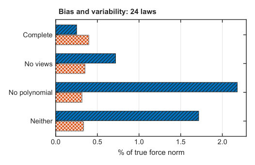
<figcaption class="paper-figure-caption"><b>Fig 4.</b> Figure 4: Bias and realization spread after retraining on a separate 24-law set with five realizations at η = 0.03; spread uses divisor five. Diagonal and cross hatching distinguish bias and realization spread in grayscale.</figcaption>
</figure>
<figure class="paper-figure-card">
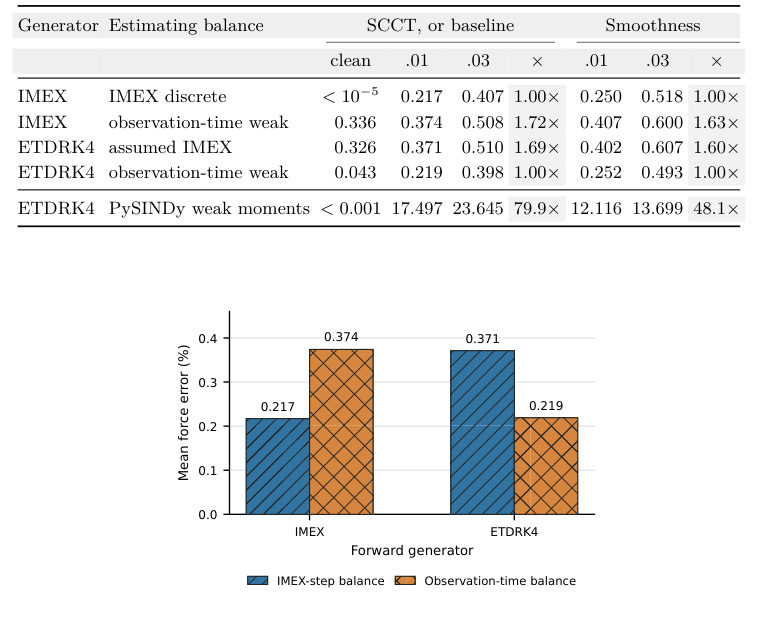
<figcaption class="paper-figure-caption"><b>Fig 5.</b> Figure 5: Generator-by-balance crossover for SCCT at η = 0.01 on 24 laws. Each pair of hatched bars uses the same observations; lower mean force error is better. The preferred balance reverses between IMEX- and ETDRK4-generated trajectories. The smoothness inverse follows the same ordering (Table 2).</figcaption>
</figure>
</div>

<p><strong>Summary.</strong> This work tackles the difficult inverse problem of determining the constitutive force driving phase transitions from noisy Allen-Cahn simulation movies. It introduces noise-adjusted moment equations and a specialized transformer (SCCT) to correct for various sources of measurement bias. The results demonstrate that the method accurately recovers the underlying physics, even distinguishing forces based on fine-scale interface details.</p>
<p><strong>Why it may be interesting.</strong> While focused on classical phase transitions, the rigorous treatment of noise, bias correction, and inverse problem solving using moment methods and advanced regularization techniques is highly relevant to reconstructing quantum dynamics from noisy measurements.</p>
<details>
<summary>Detailed structure</summary>
<p><strong>Main problem.</strong> The paper addresses the challenging inverse problem of inferring the unknown constitutive force governing a phase-field evolution from noisy, time-series image data.</p>
<p><strong>Main result.</strong> The developed noise-adjusted moment equations and the SCCT successfully infer the force, showing that accurate estimation of the underlying equation structure is more critical than increasing regularization flexibility.</p>
<p><strong>Method.</strong> The methodology involves developing observation-aware moment equations to correct for nonlinear observation noise, instrument coupling, and temporal biases, which are then used in a constrained Bernstein inverse for force reconstruction.</p>
<p><strong>Model / system.</strong> The system is governed by the Allen-Cahn dynamics, which describes the evolution of an order parameter $u$ as an $L^2$ gradient flow of an energy functional. The force $G(u)$ is parameterized within an admissible family.</p>
<p><strong>Key observables.</strong> Noisy phase observations ($y_{n,i}$), topological invariants ($b_0, b_1, b_2$), and the inferred constitutive force $G(u)$.</p>
<p><strong>Important parameters / regimes.</strong> The surface tension ($\sigma$) sets the energy scale, and the force $G(u)$ is parameterized by five coefficients ($c_j$).</p>
<p><strong>Assumptions / limitations.</strong> The noise is assumed to be i.i.d. Gaussian for bias correction, and the method requires separating the force inference from the external energy scale.</p>
<p><strong>Figures summary.</strong> Figure 1 illustrates the method hierarchy, detailing how Hermite polynomials and paired views correct distinct noise effects, while the observation source dictates the temporal balance choice.</p>
<p><strong>Paper structure.</strong> The paper builds logically: Section 2 establishes the identifiability of the force; Section 3 develops the noise-adjusted moment equations and the constrained inverse; and Section 4 validates the entire pipeline using synthetic and physical test cases.</p>
</details>
<details>
<summary>Abstract</summary>
<p>Inferring an Allen-Cahn constitutive force from images requires more than an accurate optimizer: nonlinear observation noise alters the mean of force features, shared noise couples instruments to the response, and a temporal balance borrowed from another solver can remain biased even on clean data. We develop observation-aware, noise-adjusted moment equations that address these effects before inversion. The surface-tension-calibrated constitutive transformer (SCCT) couples the resulting moments to a positive Bernstein inverse and can adapt its prior and precision from images and moments. A conditional stability bound separates moment residuals from prior error. Synthetic tests show that correcting the estimating equation matters more than increasing regularizer flexibility; the benefit of learned adaptation is smaller and depends on the training comparison. Forces inferred from planar movies predict unseen planar and three-dimensional evolutions. A ring-cage breakup shows why diffuse-interface accuracy distinguishes forces even when their topological predictions agree, while external surface tension sets the energy scale separately.</p>
</details>
<p><sub><a href="#top">↑ back to top</a></sub></p>

<p><a id="paper-2610.02493"></a></p>
<h3 id="magnetic-field-response-of-generalized-wigner-crystals-in-twisted-motemath1458math"><a href="http://arxiv.org/abs/2610.02493v1">Magnetic-field response of generalized Wigner crystals in twisted MoTe$_2$</a></h3>
<p><strong>Authors:</strong> F. K. Wolff, S. Jiao, H. Park, J. Cai, E. Anderson, X. Liu, C. Wang, T. Taniguchi, K. Watanabe, X. Xu, D. Xiao, S. Vaitiekėnas<br>
<strong>Type:</strong> both · <strong>Category:</strong> strongly correlated electrons · <strong>PDF:</strong> <a href="https://arxiv.org/pdf/2610.02493v1">https://arxiv.org/pdf/2610.02493v1</a><br>
<strong>Analysis basis:</strong> full PDF text, analyzed in chunks
<strong>Topic relevance:</strong> <code>analog quantum simulation</code> <strong>2/5</strong></p>
<div class="figure-strip-hint">↔ Scroll figures horizontally</div>
<div class="paper-figures-scroll">
<figure class="paper-figure-card">
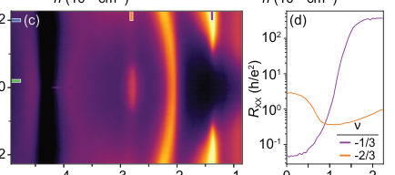
<figcaption class="paper-figure-caption"><b>Fig 1.</b> Fig. 2. (a) Longitudinal resistance, RXX, as a function of carrier density, n, and displacement field, D, measured at µ0H = 0.2 T. (b) Same as (a) but taken at µ0H = 2 T, (c) RXX as a function of n and out-of-plane magnetic field, µ0H, measured at fixed D/ε0 = 0.12 V/nm, showing the evolution of charge-ordered states at commensurate fillings. (d) Line cuts of RXX at ν = −2/3 and −1/3, showing the opposite evolution of the two states relative to h/e2.</figcaption>
</figure>
<figure class="paper-figure-card">
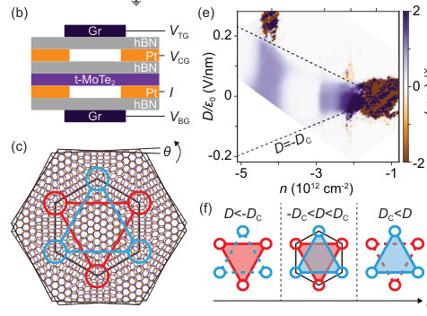
<figcaption class="paper-figure-caption"><b>Fig 2.</b> Fig. 1. (a) Atomic-force micrograph of the device over- laid with the measurement setup. (b) Schematic cross sec- tion showing the twisted MoTe2 bilayer, Pt contacts, and the three-gate geometry. The top and bottom gates at volt- ages VTG and VBG are used to tune the charge-carrier density and the perpendicular displacement field, whereas the contact gate at VCG improves the contact transparency. (c) Schematic illustration of the moir´e superlattice formed in twisted bi- layer MoTe2, highlighting the two moir´e sublattices. (d) and (e) Longitudinal and transverse resistance, RXX and RXY, measured as a function of carrier density, n, and displace- ment field, D at |µ0H| = 0.2 T. The dashed...</figcaption>
</figure>
<figure class="paper-figure-card">
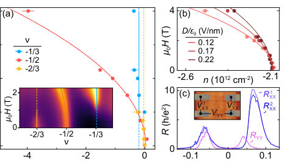
<figcaption class="paper-figure-caption"><b>Fig 3.</b> Fig. 3. (a) Magnetic-field dependence of the extracted rel- ative density shift, δn, of the resistance peaks at ν = −2/3, −1/2, and −1/3. The ν = −1/2 data are best described by a shifted quadratic function, whereas the ν = −2/3 and −1/3 data are consistent with constants. Inset: High-resolution ν– µ0H map with the fitted peak positions overlaid. (b) Peak carrier density of the ν = −1/2 state versus H at three dis- placement fields, showing that the curvature decreases with increasing D. (c) Symmetrized longitudinal resistance, R, as a function of D, measured near ν = −1/2 in a van der Pauw configuration for three probe configurations shown in the in- set. RYY shows a quantitatively...</figcaption>
</figure>
</div>

<p><strong>Summary.</strong> This work reports on magnetotransport measurements in twisted MoTe2, revealing that fractional hole-filling states behave as generalized Wigner crystals. The key finding is the stark contrast in how the resistance responds to a perpendicular magnetic field at different fillings, suggesting that the underlying charge configuration dictates the magnetic lattice and transport properties.</p>
<p><strong>Why it may be interesting.</strong> The work provides experimental evidence of distinct correlated insulating/charge-ordered states whose magnetic response is highly sensitive to the specific fractional filling, offering a playground for studying magnetic control in correlated electronic systems.</p>
<details>
<summary>Detailed structure</summary>
<p><strong>Main problem.</strong> The study investigates the magnetotransport response of fractional hole-filling states in a twisted MoTe2 homobilayer, focusing on the interplay between magnetism and charge order.</p>
<p><strong>Main result.</strong> The system exhibits distinct, contrasting magnetic responses at different fractional fillings ($
u = -2/3$ vs. $
u = -1/3$), which are interpreted as signatures of generalized Wigner crystals with different underlying magnetic lattices.</p>
<p><strong>Method.</strong> The research combines low-temperature magnetotransport measurements (measuring $R_{XX}$ and $R_{XY}$) with theoretical modeling using Hartree-Fock and exact-diagonalization techniques.</p>
<p><strong>Model / system.</strong> The physical platform is a twisted MoTe2 homobilayer, which forms a moiré superlattice. The low-energy physics is modeled by carriers on an effective triangular lattice, exhibiting correlated electron behavior at fractional fillings.</p>
<p><strong>Key observables.</strong> Longitudinal and transverse resistance ($R_{XX}, R_{XY}$), resistance peaks at fractional fillings ($
u = -2/3, -1/3, -1/2$), and the shift of these peaks with perpendicular magnetic field ($H$).</p>
<p><strong>Important parameters / regimes.</strong> Fractional filling factors ($
u$), perpendicular magnetic field ($H$), and perpendicular displacement field ($D$).</p>
<p><strong>Assumptions / limitations.</strong> The analysis assumes the system is in the layer-polarized regime ($|D| > D_C$) and interprets the observed phenomena through the lens of generalized Wigner crystal formation.</p>
<p><strong>Figures summary.</strong> Figures show the evolution of resistance peaks with $H$ at different fillings, demonstrating opposite magnetic responses at $
u = -2/3$ and $
u = -1/3$, and quadratic shifts/anisotropy at $
u = -1/2$.</p>
<p><strong>Paper structure.</strong> The paper progresses by presenting experimental magnetotransport data across various fillings, contrasting the magnetic field responses, and then using theoretical calculations (Hartree-Fock/exact diagonalization) to explain the observed differences based on the underlying charge configuration and magnetic lattice structure.</p>
</details>
<details>
<summary>Abstract</summary>
<p>We report a magnetotransport study of fractional hole-filling states in the layer-polarized regime of a twisted MoTe$_2$ homobilayer. A perpendicular magnetic field suppresses the resistance peak at the two-thirds filling while enhancing the one-third peak by several orders of magnitude. Both remain near their commensurate densities. We argue that these commensurate states are generalized Wigner crystals whose distinct charge configurations define different magnetic lattices, leading to contrasting responses to spin polarization. Near half filling, we observe a qualitatively different state whose resistance maximum shifts approximately quadratically with field and exhibits pronounced transport anisotropy consistent with a stripe phase. These results reveal a strong dependence of magnetotransport on fractional filling and open a route to magnetic control of transport in moiré charge-ordered states.</p>
</details>
<p><sub><a href="#top">↑ back to top</a></sub></p>

<p><a id="paper-2610.03003"></a></p>
<h3 id="binary-kagome-superconducting-candidates-hosting-topological-electronic-states"><a href="http://arxiv.org/abs/2610.03003v1">Binary kagome superconducting candidates hosting topological electronic states</a></h3>
<p><strong>Authors:</strong> Xin-Wei Yi, Jing-Yang You, Gang Su<br>
<strong>Type:</strong> theory · <strong>Category:</strong> strongly correlated electrons · <strong>PDF:</strong> <a href="https://arxiv.org/pdf/2610.03003v1">https://arxiv.org/pdf/2610.03003v1</a><br>
<strong>Analysis basis:</strong> full PDF text, analyzed in chunks
<strong>Topic relevance:</strong> <code>analog quantum simulation</code> <strong>1/5</strong></p>
<div class="figure-strip-hint">↔ Scroll figures horizontally</div>
<div class="paper-figures-scroll">
<figure class="paper-figure-card">
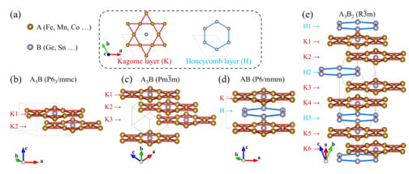
<figcaption class="paper-figure-caption"><b>Fig 1.</b> FIG. 1. Binary kagome structural families. (a) Two common layer motifs used to construct the binary kagome prototypes. The A atoms (gold) form kagome layers (K), while the B atoms (grey) form hon- eycomb layers (H). (b–e) Crystal structures of four prototype fami- lies: (b) A3B (P63/mmc), (c) A3B (Pm¯3m), (d) AB (P6/mmm), and (e) A3B2 (R¯3m). These structures can be generated by stacking kagome and honeycomb layers in different sequences and registries. The drawings highlight the in-plane shifts between adjacent layers.</figcaption>
</figure>
<figure class="paper-figure-card">
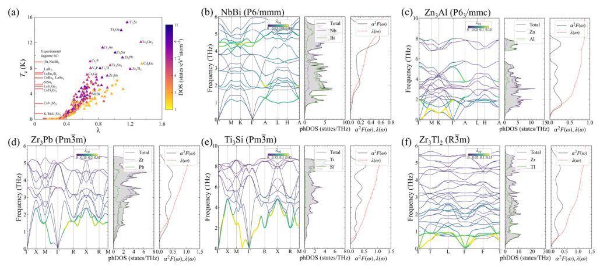
<figcaption class="paper-figure-caption"><b>Fig 2.</b> FIG. 2. Predicted kagome superconducting candidates. (a) Estimated Tc versus electron-phonon-coupling constant λ, with the N(EF) used as the color scale; representative ambient-pressure kagome materials are shown as references [40, 43, 48–56]. (b–f) Phonon dispersions projected by the mode-resolved EPC λνq, together with phonon density of states, Eliashberg spectral function α2F(ω), and accumulated λ(ω) for representative systems: (b) NbBi (P6/mmm), (c) Zn3Al (P63/mmc), (d) Zr3Pb (Pm¯3m), (e) Ti3Si (Pm¯3m), and (f) Zr3Tl2 (R¯3m). λνq denotes the contribution to EPC λ of phonon branch ν at wave vector q.</figcaption>
</figure>
<figure class="paper-figure-card">
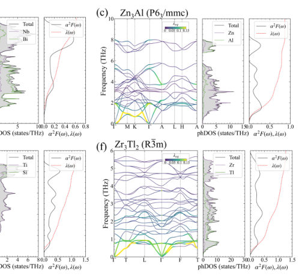
<figcaption class="paper-figure-caption"><b>Fig 3.</b> Fig. 2(a) summarizes the superconducting landscape by plotting the estimated Tc against λ, with N(EF) used as the color scale. The data show the expected broad tendency for Tc to increase with both EPC strength and the Fermi-level den- sity of states, but the spread at fixed λ indicates that phonon- energy scales and mode selectivity are also important. Rep- resentative experimental ambient-pressure kagome supercon- ductors are included in Fig. 2(a) for comparison. The layered reference compounds span different superconducting scales: AV3Sb5 has Tc ≈0.9-2.5 K, CsTi3Bi5 has a reported onset near 4.8 K, and LaRu3Si2 has Tc ≈7 K. The cubic (A3B)- type compound (Sr,Na)Bi3, whose face-centered...</figcaption>
</figure>
<figure class="paper-figure-card">
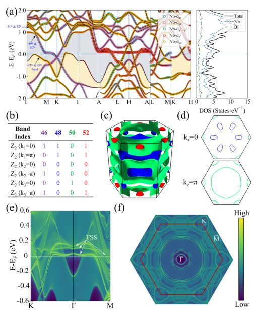
<figcaption class="paper-figure-caption"><b>Fig 4.</b> FIG. 3. Electronic topology of NbBi. (a) Spin-orbit-coupled bulk band structure with Nb d-orbital projections and electronic density of states (DOS). The continuous direct gaps between the 45/46 and 47/48 Kramers pairs and between the 47/48 and 49/50 Kramers pairs are highlighted by light-yellow and light-gray shading, respectively. (b) Plane-resolved Z2 indices for the direct gaps labeled by the upper band index of each Kramers pair, where k1, k2, and k3 denote re- ciprocal primitive coordinates. (c) Three-dimensional Fermi surface and (d) two-dimensional Fermi-surface cuts at kz = 0 and kz = π. (e) Surface spectral function along the ¯K–¯Γ– ¯ M path on the (001) surface. Topological...</figcaption>
</figure>
<figure class="paper-figure-card">
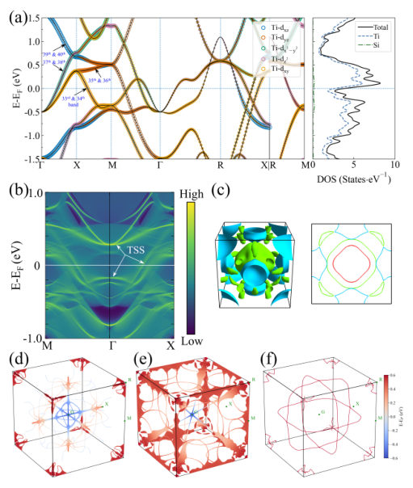
<figcaption class="paper-figure-caption"><b>Fig 5.</b> FIG. 4. Electronic topology of Ti3Si. (a) Spin-orbit-coupled bulk band structure with Ti d-orbital projections and electronic DOS. (b) Surface spectral function along the ¯ M–¯Γ– ¯ X path on the (001) sur- face with SOC. (c) Three-dimensional Fermi surface with SOC and its kz = 0 two-dimensional cut. Panels (d–f) show representative nodal manifolds obtained without SOC, arising from crossings be- tween the spin-degenerate band pairs 33/34 and 35/36 in (d), 35/36 and 37/38 in (e), and 37/38 and 39/40 in (f). The common color scale denotes the crossing energy relative to EF.</figcaption>
</figure>
</div>

<p><strong>Summary.</strong> This work presents a comprehensive computational search for novel binary kagome superconductors that possess intrinsic topological electronic states. By combining stability filtering, electron-phonon coupling calculations, and topological analysis, the authors predict several high-$T_c$ candidates, notably $   ext{Ti}_3   ext{Si}$, making these materials promising platforms for topological superconductivity.</p>
<p><strong>Why it may be interesting.</strong> The combination of superconductivity (a many-body phenomenon) with intrinsic topological order in a highly structured lattice like kagome is central to realizing exotic quantum states, which is a key area of condensed matter theory.</p>
<details>
<summary>Detailed structure</summary>
<p><strong>Main problem.</strong> The paper systematically searches for binary kagome superconducting candidates that simultaneously host topological electronic states, aiming for materials exhibiting topological superconductivity.</p>
<p><strong>Main result.</strong> They identified 286 stable candidates, with seven exceeding the ambient-pressure reference $T_c$ of $\sim 9$ K. Specifically, $ ext{Ti}_3   ext{Si}$ was found with the highest estimated $T_c$ of $15.2$ K.</p>
<p><strong>Method.</strong> The study employs a high-throughput first-principles workflow combining phonon stability checks, magnetic ground-state searches, electron-phonon coupling (EPC) calculations, and topological electronic structure analysis.</p>
<p><strong>Model / system.</strong> The focus is on binary compounds forming kagome lattices within structural prototypes $A_mB_n$ ($m:n=3:1$, $3:2$, $1:1$). The theoretical framework models superconductivity via EPC and topological properties using $\mathbb{Z}_2$ indices.</p>
<p><strong>Key observables.</strong> Estimated superconducting transition temperature ($T_c$), electron-phonon coupling constant ($\lambda$), topological indices ($\mathbb{Z}_2$), and surface state characteristics (e.g., Dirac cones).</p>
<p><strong>Important parameters / regimes.</strong> The search filters include formation energy and phonon stability. High $T_c$ candidates are those with strong EPC and topological features.</p>
<p><strong>Assumptions / limitations.</strong> The analysis relies on first-principles calculations and approximations such as the McMillan/Allen–Dynes formulas for $T_c$ estimation and the isotropic EPC approximation.</p>
<p><strong>Figures summary.</strong> Figure 1 shows prototype crystal structures. Figure 2 plots $T_c$ vs. $\lambda$ and details phonon dispersions/EPC spectral functions for representative systems. Figure 3 details the electronic topology of $  ext{NbBi}$.</p>
<p><strong>Paper structure.</strong> The paper follows a systematic search methodology: first, filtering for stable candidates; second, calculating EPC and estimating $T_c$; and finally, analyzing the topological electronic structure of the promising superconducting materials.</p>
</details>
<details>
<summary>Abstract</summary>
<p>Topological superconductivity has attracted broad interest because of its connection to Majorana fermions and quantum computation. Kagome materials provide a natural setting in which interesting electronic structures, topological surface states, and superconductivity may occur in nearby energy windows. Here we carry out a systematic first-principles search for binary kagome superconducting candidates with topological electronic states across several structural families $A_mB_n$ ($m$:$n$=3:1; 3:2; 1:1). The screening combines formation-energy and phonon-stability filtering, magnetic-ground-state searches, electron-phonon-coupling calculations, and topological electronic-structure analysis. We identify 286 nonmagnetic dynamically stable candidates for electron-phonon-coupling analysis, among which 84 have estimated transition temperatures above 3 K and seven exceed the $\sim 9$ K reference scale of existing ambient-pressure kagome superconductors. In addition, several systems are predicted to host abundant topological surface states near the Fermi level. NbBi is identified as a $\mathbb{Z}_2$ topological metal with clear Dirac-cone topological surface states and a kagome-derived flat band near $E_F$. Ti$_3$Si, with the largest estimated $T_\text{c}=15.2$ K in this dataset, shows nodal-line-derived drumhead surface states and selected nodes that survive spin-orbit coupling near $E_F$. Combining superconductivity with nontrivial topological electronic structures, the binary kagome compounds predicted here represent compact and chemically tunable candidate platforms for topological superconductivity and for exploring kagome-related quantum phenomena.</p>
</details>
<p><sub><a href="#top">↑ back to top</a></sub></p>

<p><a id="paper-2610.03601"></a></p>
<h3 id="layer-asymmetry-induced-topological-superconductivity-in-high-tmath1495math-bilayer-nickelates"><a href="http://arxiv.org/abs/2610.03601v1">Layer-Asymmetry-Induced Topological Superconductivity in High-T$_c$ Bilayer Nickelates</a></h3>
<p><strong>Authors:</strong> Zhongyi Zhang, Congcong Le, Hoi Chun Po, Jiangping Hu, Xianxin Wu, Shengshan Qin<br>
<strong>Type:</strong> theory · <strong>Category:</strong> strongly correlated electrons · <strong>PDF:</strong> <a href="https://arxiv.org/pdf/2610.03601v1">https://arxiv.org/pdf/2610.03601v1</a><br>
<strong>Analysis basis:</strong> full PDF text, analyzed in chunks
<strong>Topic relevance:</strong> <code>analog quantum simulation</code> <strong>1/5</strong></p>
<div class="figure-strip-hint">↔ Scroll figures horizontally</div>
<div class="paper-figures-scroll">
<figure class="paper-figure-card">
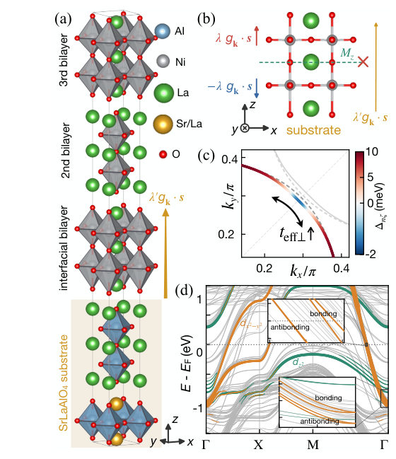
<figcaption class="paper-figure-caption"><b>Fig 1.</b> FIG. 1. (a) Schematic of a La3Ni2O7 film grown on SrLaAlO4 with a LaAlO3 layer (shaded), showing the interfacial bilayer and the two bilayers above it. The gold arrow marks the interface electric field, which sets the layer-uniform Rashba coupling and weakens away from the interface. (b) Side view of the interfacial bilayer. The red and blue arrows mark the opposite polarities of the layer-staggered Rashba coupling (±λ) on the top and bottom layers, and the gold arrow marks the layer-uniform Rashba coupling (λ′) shared by both layers. The dashed line is the mirror plane Mz, broken by the sub- strate. (c) Bonding χ = + Fermi surface of the α pocket colored by the intraband pairing. On the...</figcaption>
</figure>
<figure class="paper-figure-card">
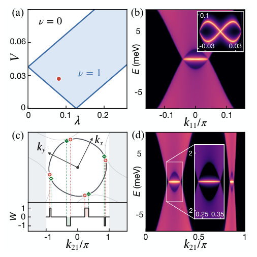
<figcaption class="paper-figure-caption"><b>Fig 2.</b> FIG. 2. (a) Topologically nontrivial region of Eq. (5). The horizontal scale is aλ in eV ˚A and the vertical scale is V in eV. The red dot marks the representative parameters used in this work, V = 27 meV and λ = 21.6 meV (aλ = 81 meV ˚A). (b) Superconducting edge modes on the [11] edge, with the conserved momentum k11 = kx − ky. (c) Brillouin zone in the frame of a [21] edge (top) and winding number W at fixed k21 = kx −2ky (bottom). Circles and diamonds are the nodes with chiral charges Q = +1 and −1 on the bonding χ = + Fermi surface (dark curve). (d) Same as (b) for [21] edge, where flat band exists at k21 with nonzero winding number in (c).</figcaption>
</figure>
<figure class="paper-figure-card">
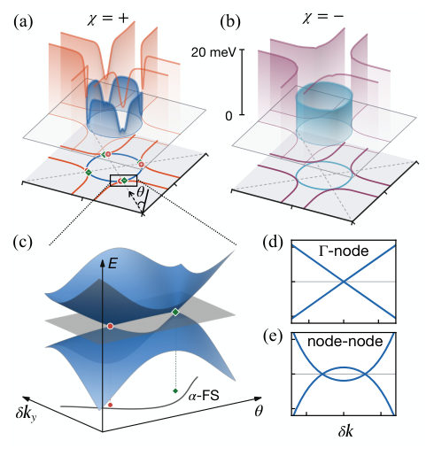
<figcaption class="paper-figure-caption"><b>Fig 3.</b> FIG. 3. (a),(b) BdG gap on the normal-state Fermi surfaces of he- licity χ = + and χ = −. The lower planes show the Fermi surfaces, and in (a) the nodes with chiral charges Q = +1 (red circles) and −1 (green diamonds), the angle θ at M counted clockwise from M- Γ. (c) The energy dispersion near the node pair, versus θ and the radial offset from the nodes. The base plane shows the χ = + α Fermi surface and the node projections. (d),(e) BdG bands along the line from Γ through a node and along the line through both nodes.</figcaption>
</figure>
<figure class="paper-figure-card">
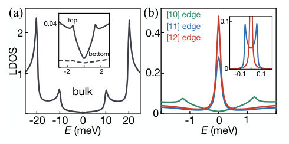
<figcaption class="paper-figure-caption"><b>Fig 4.</b> FIG. 4. Electron local density of states (LDOS) summed over the two layers. (a) Bulk, with a broadening of 0.3 meV. The inset shows the top (solid) and bottom (dashed) layers separately. (b) Surface LDOS at the [10], [11], and [21] edges, with a broadening of 0.08 meV. The inset shows the [11] and [21] edges with a broadening of 0.005 meV.</figcaption>
</figure>
</div>

<p><strong>Summary.</strong> This work demonstrates that high-T$_c$ bilayer nickelates can host a topological superconducting phase due to the interplay between layer-asymmetry and spin-orbit coupling. By modeling the system with a two-orbital Hamiltonian, the authors predict the existence of topological invariants and Majorana boundary modes. This establishes nickelates as a promising platform for realizing and tuning topological superconductivity.</p>
<p><strong>Why it may be interesting.</strong> The explicit connection between structural asymmetry (substrate interaction) and the emergence of topological superconductivity in a strongly correlated material like nickelates is highly relevant for understanding unconventional pairing mechanisms.</p>
<details>
<summary>Detailed structure</summary>
<p><strong>Main problem.</strong> The study investigates whether the interlayer pairing mechanism in high-T$_c$ bilayer nickelates can support an intrinsic time-reversal-invariant topological superconducting phase.</p>
<p><strong>Main result.</strong> The combination of a modest layer-asymmetric potential and layer-staggered Rashba SOC drives the system into a topological superconducting phase characterized by a nonzero mirror winding number and Majorana boundary modes.</p>
<p><strong>Method.</strong> The analysis uses a two-orbital tight-binding model derived from first-principles calculations, analyzing the Bogoliubov-de Gennes Hamiltonian structure.</p>
<p><strong>Model / system.</strong> The system is modeled as substrate-supported bilayer nickelate thin films, incorporating layer-asymmetric potentials and layer-staggered Rashba spin-orbit coupling into an effective two-orbital Hamiltonian.</p>
<p><strong>Key observables.</strong> Topological superconducting phase (Class DIII), nonzero mirror winding number, Majorana Kramers pair at the [11] edge, and bulk gap nodes.</p>
<p><strong>Important parameters / regimes.</strong> Layer-asymmetric potential strength (V) and Rashba SOC strength (lambda).</p>
<p><strong>Assumptions / limitations.</strong> The model neglects the orbital dependence of the substrate-induced terms, and the substrate breaks the mirror symmetry via an interface electric dipole.</p>
<p><strong>Figures summary.</strong> Figures illustrate the physical setup on the substrate, the pairing structure on the Fermi surface, and the band structure showing the effect of SOC.</p>
<p><strong>Paper structure.</strong> The paper establishes the physical model using first-principles derived parameters, analyzes the resulting Hamiltonian structure, calculates the topological invariants (winding number), and concludes by discussing experimental realization.</p>
</details>
<details>
<summary>Abstract</summary>
<p>The recent discovery of high-T$_c$ superconductivity in bilayer nickelates has highlighted the crucial role of interlayer coupling and motivated proposals for dominant interlayer pairing. Whether such pairing can support topological superconductivity, however, remains unexplored. Here, we demonstrate that substrate-supported bilayer nickelate thin films can host an intrinsic time-reversal-invariant topological superconducting phase protected by diagonal mirror symmetry. Using a two-orbital model derived from first-principles calculations, we show that a modest layer-asymmetric potential and layer-staggered Rashba spin-orbit coupling drive the system into this topological phase over a broad parameter range with a dominant interlayer pairing. The nontrivial topology arises from a reversal of the pairing sign on one of the spin-split bonding Fermi surfaces and is characterized by a nonzero mirror winding number along the diagonal direction, as well as a Majorana Kramers pair at the [11] edge. The phase also features bulk gap nodes located slightly away from the diagonal directions, featuring chiral charge and zero-energy flat bands. We discuss experimental routes for realizing and tuning this phase. Our results establish high-T$_c$ bilayer nickelates as a promising platform for topological superconductivity, where tunable topological transitions and Majorana boundary modes can provide probes of unconventional pairing.</p>
</details>
<p><sub><a href="#top">↑ back to top</a></sub></p>

<p><a id="paper-2610.03188"></a></p>
<h3 id="plasmon-modes-in-tilted-three-dimensional-nodal-ring-semimetals-ii-vortex-nodal-ring"><a href="http://arxiv.org/abs/2610.03188v1">Plasmon modes in tilted three-dimensional nodal-ring semimetals. II. Vortex nodal ring</a></h3>
<p><strong>Authors:</strong> Ipsita Mandal<br>
<strong>Type:</strong> theory · <strong>Category:</strong> other · <strong>PDF:</strong> <a href="https://arxiv.org/pdf/2610.03188v1">https://arxiv.org/pdf/2610.03188v1</a><br>
<strong>Analysis basis:</strong> full PDF text, analyzed in chunks
<strong>Topic relevance:</strong> <code>Keldysh / 2PI / non-Gaussian methods</code> <strong>1/5</strong></p>
<div class="figure-strip-hint">↔ Scroll figures horizontally</div>
<div class="paper-figures-scroll">
<figure class="paper-figure-card">
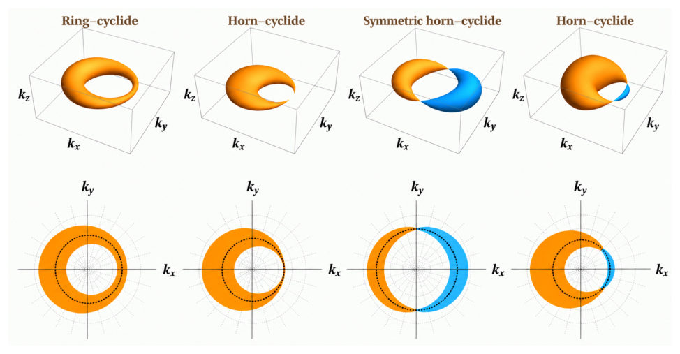
<figcaption class="paper-figure-caption"><b>Fig 1.</b> FIG. 1. Evolution of the FS of the VNR under an in-plane tilt with respect to the kx-axis [27, 33]. The upper row shows the 3d view and the lower row shows the projection onto the kxky-plane. The panels show, from left to right, the ring-cyclide regime, the horn-cyclide regime at µ = ˜η, where the hole-pocket has shrunk to a point, the symmetric horn-cyclide regime (µ = 0), and the horn-cyclide regime with 0 &lt; µ &lt; ˜η. The orange and blue colours depict the s = 2 (electron) and s = 1 (hole) pockets, respectively. The dotted black circle marks the original nodal ring at µ = ηx = 0. The FS is identical to that of the PTNR.</figcaption>
</figure>
<figure class="paper-figure-card">
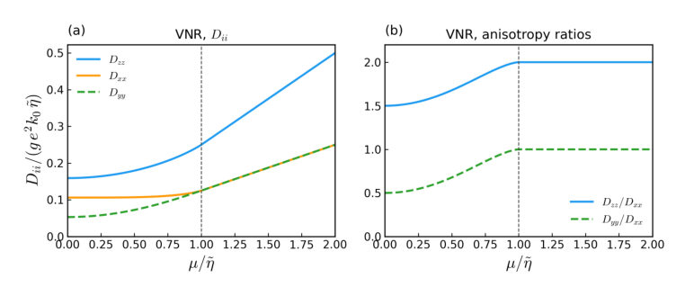
<figcaption class="paper-figure-caption"><b>Fig 2.</b> FIG. 2. Drude weights of the VNR under an in-plane tilt, at leading order in ηx and at fixed ˜η. Panel (a) shows Dzz, Dxx, and Dyy in units of g e2 k0 ˜η as functions of µ/˜η. Panel (b) shows the ratios Dzz/Dxx and Dyy/Dxx. The dashed vertical lines mark µ = ˜η, which separates the horn-cyclide and ring-cyclide regimes. All curves coincide with those of the PTNR.</figcaption>
</figure>
<figure class="paper-figure-card">
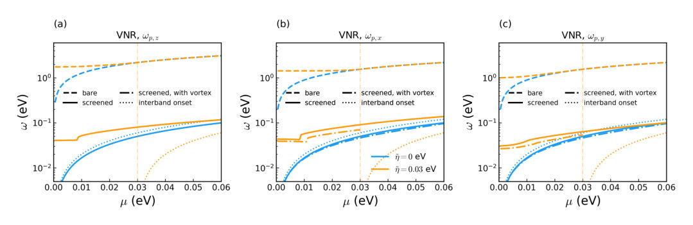
<figcaption class="paper-figure-caption"><b>Fig 3.</b> FIG. 3. Bare and screened plasma frequencies of the VNR under an in-plane tilt as functions of µ. Panels (a), (b), and (c) show ωp,z, ωp,x, and ωp,y, respectively. The dashed and solid lines are the bare frequencies and the screened frequencies from the zero of Re εRPA of the terms that do not involve Λ. The dotted lines mark the interband onset, which is absent in the horn-cyclide regime. The blue and orange colours correspond to ˜η = 0 and 0.03 eV, and the thin vertical line marks µ = ˜η. The dash-dotted lines in (b) and (c) are the zeros of Re εRPA including the second term of the overlap factor with the cut-off Λ = k0. They are shown only where κF &lt; Λ. The parameters are those of Sec....</figcaption>
</figure>
<figure class="paper-figure-card">
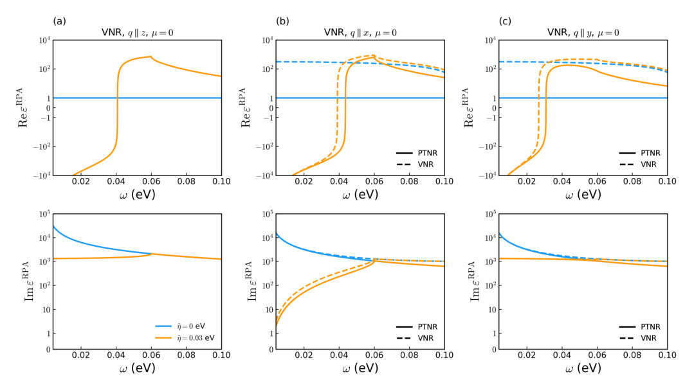
<figcaption class="paper-figure-caption"><b>Fig 4.</b> FIG. 4. RPA dielectric function of the VNR under an in-plane tilt at µ = 0. Panels (a), (b), and (c) show the ˆz, ˆx, and ˆy channels. The upper and lower rows show Re εRPA and Im εRPA on symmetric logarithmic scales. The blue and orange colours correspond to ˜η = 0 and 0.03 eV. The solid lines are the terms that do not involve Λ, and the ˆz channel is the full VNR result. The dashed lines in (b) and (c) include the second term of the overlap factor with the cut-off Λ = k0, and they stop where ω approaches 2 v0 Λ. The parameters are those of Sec. II C.</figcaption>
</figure>
<figure class="paper-figure-card">
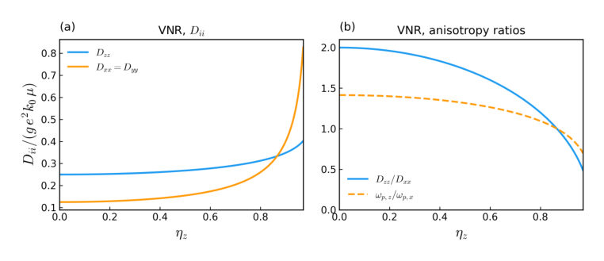
<figcaption class="paper-figure-caption"><b>Fig 5.</b> FIG. 5. Drude weights of the VNR under an axial tilt. Panel (a) shows Dzz and Dxx = Dyy in units of g e2 k0 µ as functions of ηz. Panel (b) shows the anisotropy ratios Dzz/Dxx and ωp,z/ωp,x. All curves coincide with those of the PTNR.</figcaption>
</figure>
</div>

<p><strong>Summary.</strong> This theoretical work analyzes plasmon modes in Vortex Nodal-Ring Semimetals (VNRs) by comparing them to known systems. The authors show that although the basic energy spectrum might match other models, the VNR's unique pseudospin texture alters the charge response through modifications to the band-overlap factor and quantum metric. This highlights that topological texture, beyond just band structure, dictates collective electronic behavior.</p>
<p><strong>Why it may be interesting.</strong> The detailed study of how geometric properties like pseudospin texture and Berry curvature influence collective excitations (plasmons) provides a rich theoretical framework applicable to understanding charge dynamics in novel topological materials.</p>
<details>
<summary>Detailed structure</summary>
<p><strong>Main problem.</strong> The paper investigates how the unique pseudospin texture of a Vortex Nodal-Ring Semimetal (VNR) modifies its collective charge response, specifically plasmon modes, compared to conventional nodal-ring semimetals like the PT-symmetric case.</p>
<p><strong>Main result.</strong> While the VNR and PTNR share identical linearised energy dispersions and DOS, the VNR's vortex texture introduces a toroidal-angle dependence in the band-overlap factor and quantum metric, which modifies the charge response, particularly for in-plane wavevectors.</p>
<p><strong>Method.</strong> The analysis employs a low-energy two-band description and utilizes the Random-Phase Approximation (RPA) to calculate the density response, dielectric function, and plasmon modes.</p>
<p><strong>Model / system.</strong> The system is a three-dimensional VNR, modeled by a linearized Hamiltonian incorporating a tilt term. The geometry is characterized by toroidal and poloidal angles, and the pseudospin texture is central to the investigation.</p>
<p><strong>Key observables.</strong> Plasmon modes, dielectric function, density response, Drude weights, overlap factor, and quantum metric.</p>
<p><strong>Important parameters / regimes.</strong> Low doping limit ($\mu \ll v_0 k_0$), in-plane and axial band-tilts, and the wavevector orientation ($\mathbf{q}$).</p>
<p><strong>Assumptions / limitations.</strong> The analysis relies on a low-energy two-band description and the Random-Phase Approximation (RPA).</p>
<p><strong>Figures summary.</strong> Not specified.</p>
<p><strong>Paper structure.</strong> The paper systematically compares the charge response of VNRs to PTNRs, first establishing the commonalities (coincident spectra) and then highlighting the unique, texture-dependent modifications introduced by the vortex structure in the overlap factor and quantum metric.</p>
</details>
<details>
<summary>Abstract</summary>
<p>We investigate collective charge excitations in three-dimensional vortex nodal-ring semimetals (VNRs), whose pseudospin texture winds around the nodal ring and differs qualitatively from that of the conventional $\mathcal{PT}$-symmetric nodal-ring semimetal (PTNR). While plasmon modes in PTNRs have been studied in a companion work, arXiv:2609.35373. Here, we focus on how a VNR's pseudospin texture changes the response compared with the former. Within a low-energy two-band description and the random-phase approximation, we analyse the density response, density-of-states, Drude weights, dielectric function, and plasmon modes at low doping. We consider the untilted system together with in-plane and axial band-tilts. Although the VNR and PTNR have distinct Hamiltonians, pseudospin textures, and Berry-curvature distributions, their linearised energy dispersions coincide. The vortex texture, however, introduces a toroidal-angle dependence in the band-overlap factor and quantum metric, thereby modifying the charge response. We examine how these effects enter the dielectric screening and collective modes for different wavevector orientations. Our results clarify how pseudospin texture, beyond the band dispersion alone, influences collective charge dynamics in three-dimensional nodal-ring semimetals.</p>
</details>
<p><sub><a href="#top">↑ back to top</a></sub></p>
<h3 id="other-secondary-papers-1">Other secondary papers (1)</h3>
<details>
<summary>Show other secondary papers</summary>

<p><a id="paper-2610.03404"></a></p>
<h3 id="fracture-under-body-forces-an-accessible-test-and-analysis"><a href="http://arxiv.org/abs/2610.03404v1">Fracture under body forces: An accessible test and analysis</a></h3>
<p><strong>Authors:</strong> Farhad Kamarei, Sarah Bueno De Castro, Jeffery R. Roesler, Oscar Lopez-Pamies<br>
<strong>Type:</strong> both · <strong>Category:</strong> other · <strong>PDF:</strong> <a href="https://arxiv.org/pdf/2610.03404v1">https://arxiv.org/pdf/2610.03404v1</a><br>
<strong>Analysis basis:</strong> full PDF text, analyzed in chunks</p>
<div class="figure-strip-hint">↔ Scroll figures horizontally</div>
<div class="paper-figures-scroll">
<figure class="paper-figure-card">
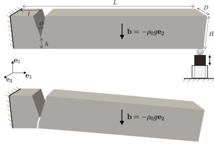
<figcaption class="paper-figure-caption"><b>Fig 1.</b> Figure 1: Schematic of the proposed test: (top) initial unde- formed configuration showing the applied gravitational body force and the retractable lower support; (bottom) fractured state following crack nucleation at the notch tip and subse- quent propagation.</figcaption>
</figure>
<figure class="paper-figure-card">
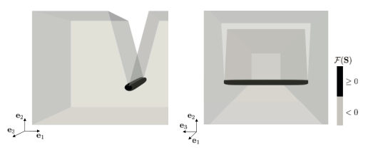
<figcaption class="paper-figure-caption"><b>Fig 2.</b> Figure 2: Contour plots from two perspectives showing the region around the notch where the stress field exceeds the strength surface of the material (F(S) ≥0). These results correspond to a mortar beam, with dimensions L = 1.7 m, H = D = 0.3 m, l = 0.2 m, h = 0.1 m, φ = 30◦, properties listed in Table 1, subjected to self-weight (g = 9.81 m/s2).</figcaption>
</figure>
<figure class="paper-figure-card">
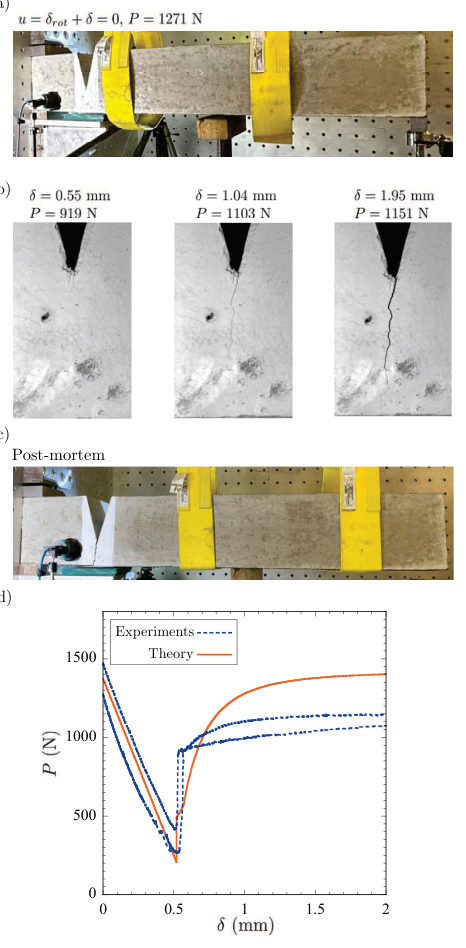
<figcaption class="paper-figure-caption"><b>Fig 3.</b> Figure 3: (a) Initial configuration and (b) front views of the notch-tip region at three intermediate stages of support retrac- tion, annotated with the corresponding deflection δ and sup- port force P for one of the specimens. (c) Post-mortem con- figuration of the same specimen. (d) Measured (dashed lines) and predicted (solid line) P vs. δ responses for the two tests.</figcaption>
</figure>
<figure class="paper-figure-card">
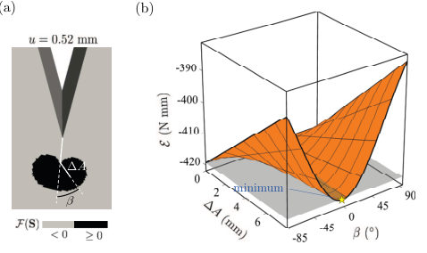
<figcaption class="paper-figure-caption"><b>Fig 4.</b> Figure 5: Elastic simulations of the test, at the support displace- ment u = 0.52 mm, on mortar containing the initial minimizing crack, (A = 7.2 mm, α = −5◦), with test add-cracks of lengths ∆A oriented at angles β with respect to the initial crack orien- tation. (a) Contour plot of a magnified region of the specimen where the stress field exceeds (F(S) ≥0) the strength surface of the material, depicting the test add-cracks considered within. (b) The energy E of the specimen plotted as a function of the test add-crack length ∆A and angle β.</figcaption>
</figure>
<figure class="paper-figure-card">
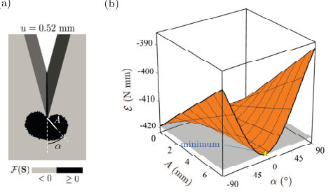
<figcaption class="paper-figure-caption"><b>Fig 5.</b> Figure 4: Elastic simulations of the test, at the support displace- ment u = 0.52 mm, on mortar containing test cracks of length A, thickness D = 0.3 m, oriented at angles α with respect to the direction of the gravitational body force. (a) Contour plot of a magnified region of the specimen where the stress field exceeds (F(S) ≥0) the strength surface of the material, de- picting the test cracks considered within. (b) The energy E of the specimen plotted as a function of the test crack length A and angle α.</figcaption>
</figure>
</div>
<p><strong>Summary.</strong> This paper introduces a novel, accessible benchtop test to study fracture mechanics in large structures under self-weight loading, bypassing the need for centrifuges. By combining this experiment with continuum fracture theory, the authors successfully validate the theory's prediction of crack nucleation and propagation based on local strength violation. This provides a significant advancement for modeling structural failure driven by gravity.</p>
<p><strong>Why it may be interesting.</strong> not directly relevant</p>
<details>
<summary>Detailed structure</summary>
<p><strong>Main problem.</strong> Studying fracture in large-scale structures dominated by self-weight is unfeasible due to immense scale, necessitating a benchtop test that bypasses specialized centrifuge facilities.</p>
<p><strong>Main result.</strong> The proposed self-weight test successfully validates a continuum fracture theory by showing that crack nucleation and propagation occur precisely where the material strength criterion is violated under actual gravity loading.</p>
<p><strong>Method.</strong> The study combines a simple benchtop experiment on a cantilever beam with advanced Finite Element Analysis (FEA) based on minimizing total energy, $E = P + G_c H^2$.</p>
<p><strong>Model / system.</strong> The physical system is a cantilever beam with a V-notch, loaded only by its self-weight. The analysis uses a macroscopic continuum fracture theory that accounts for potential energy and surface energy.</p>
<p><strong>Key observables.</strong> Crack nucleation and propagation location, support force vs. displacement load-displacement curves, and the region where the strength criterion $F(S) \geq 0$ is violated.</p>
<p><strong>Important parameters / regimes.</strong> Length scale hierarchy ($\ell \ll h < l < H = D < L$), material properties (density, elasticity, fracture toughness $G_c$), and the gravitational body force $b = -
ho_0 g e_2$.</p>
<p><strong>Assumptions / limitations.</strong> The material is assumed to be macroscopically homogeneous, isotropic, and linear elastic brittle. The analysis relies on the validity of the continuum fracture energy minimization framework.</p>
<p><strong>Figures summary.</strong> Figures illustrate the schematic of the test setup, stress field violation contours showing where fracture initiates, and load-displacement curves comparing experimental measurements to theoretical predictions.</p>
<p><strong>Paper structure.</strong> The paper introduces the problem, details the novel self-weight benchtop test, applies the theory to 3D-printable mortar and ice specimens, and validates the theory by comparing FEA results with experimental load-displacement measurements.</p>
</details>
<details>
<summary>Abstract</summary>
<p>Fracture in large-scale structures --- from failing concrete dams to calving glaciers --- is dominated by self-weight. Yet, owing to their immense scale, directly studying when and where cracks nucleate and propagate in these systems under gravity is unfeasible. To date, experimental investigations have largely relied on mimicking self-weight in scaled-down specimens via centrifugal forces, necessitating specialized centrifuge facilities. In this Letter, we introduce a simple benchtop test that bypasses the need for this infrastructure. The method utilizes a cantilever beam containing a downward-pointing V-notch, loaded solely by its self-weight. Through appropriate selection of the notch geometry and placement and the beam dimensions, the setup forces a crack to nucleate at the notch tip and propagate through the specimen in a measurable manner. We demonstrate the utility of this self-weight fracture test on a 3D-printable mortar and analyze the results using the fracture theory recently introduced in (\citeauthor{LPKFG2026}, 2026). \emph{Inter alia}, the findings provide a first validation of the theory for fracture driven by body forces.</p>
</details>
<p><sub><a href="#top">↑ back to top</a></sub></p>
</details>

<hr>
<p>
<a href="index.html">← Index</a>
 · <a href="papers_08.html">← Previous</a>
</p>
<hr>

</body>
</html>
